真实同节点重建与首／中／末端合并
展示样例限于本次已完成首／中／末视觉复核的候选轨迹；全量误差统计覆盖各自监督集及三分支交集。候选内较好案例按各分支整轨迹 ADE 选择，相近按三分支 ADE 极差，困难按三者平均 ADE。报告候选路线 3–100 m、视频 ≤25 MiB，不改变训练集合。全部轨迹使用等比例米坐标。
K32 较低重建误差 · 质量分 7.79
scene_id: hm3d/train/00744-1S7LAXRdDqK/1S7LAXRdDqK.basis.glb
episode_id: hm3d__1S7LAXRdDqK__semantic_4eaa5b45
source_name: supplement
source_prefix: oss://ss-oss1/data/user/yuanxu/vln_data/hm3d-r23-k3-bin1-20261105/supplement-20261111/
child_run: hm3d_r23_k3_bin1_supplement_20261111_scene_8569d9506048
shard_id: 1S7LAXRdDqK__00001
路程 6.28 m · 记录时长 18.00 s · 原始 37 帧。硬错误：无；suspicious：无。
| 分支 | 同节点数 | 整轨迹 ADE（m） | FDE（m） |
|---|
| K32 | 25 | 0.02139 | 0.02145 |
| K64 | 25 | 0.1648 | 0.2585 |
| RVQ | 25 | 0.03916 | 0.05052 |
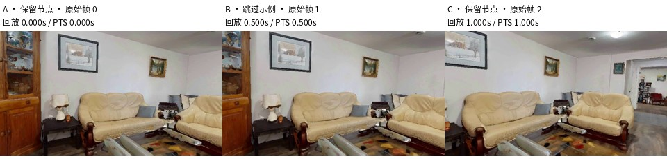
起步：真实原始帧 [0, 1, 2]；区间共跳过 1 个观测，图示其中 1 帧，均退出独立样本和历史。首个原始短步 0.000 m / -4.10°；合并 GT 局部动作 [前 0.000 m，左 -0.000 m，CCW -22.49°]，记录间隔 1.000 s。原始数据保留。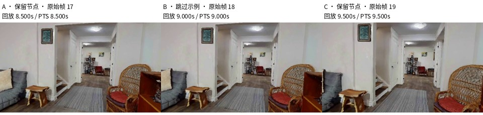
最接近中段的实际合并（边 11→12）：真实原始帧 [17, 18, 19]；区间共跳过 1 个观测，图示其中 1 帧，均退出独立样本和历史。首个原始短步 0.053 m / 0.00°；合并 GT 局部动作 [前 0.299 m，左 0.000 m，CCW 0.00°]，记录间隔 1.000 s。原始数据保留。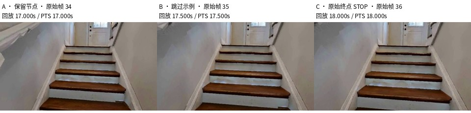
末端：真实原始帧 [34, 35, 36]；区间共跳过 1 个观测，图示其中 1 帧，均退出独立样本和历史。首个原始短步 0.132 m / -0.00°；合并 GT 局部动作 [前 0.199 m，左 -0.000 m，CCW 0.00°]，记录间隔 1.000 s。原始数据保留。K64 较低重建误差 · 质量分 9.77
scene_id: hm3d/train/00744-1S7LAXRdDqK/1S7LAXRdDqK.basis.glb
episode_id: hm3d__1S7LAXRdDqK__semantic_493175d6
source_name: supplement
source_prefix: oss://ss-oss1/data/user/yuanxu/vln_data/hm3d-r23-k3-bin1-20261105/supplement-20261111/
child_run: hm3d_r23_k3_bin1_supplement_20261111_scene_8569d9506048
shard_id: 1S7LAXRdDqK__00000
路程 3.34 m · 记录时长 14.50 s · 原始 30 帧。硬错误：无；suspicious：无。
| 分支 | 同节点数 | 整轨迹 ADE（m） | FDE（m） |
|---|
| K32 | 20 | 0.08555 | 0.1294 |
| K64 | 20 | 0.03864 | 0.1355 |
| RVQ | 20 | 0.04263 | 0.106 |
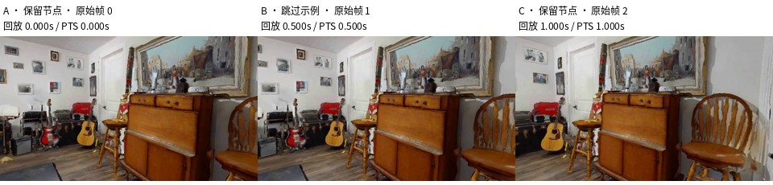
起步：真实原始帧 [0, 1, 2]；区间共跳过 1 个观测，图示其中 1 帧，均退出独立样本和历史。首个原始短步 0.000 m / -3.35°；合并 GT 局部动作 [前 0.000 m，左 0.000 m，CCW -16.20°]，记录间隔 1.000 s。原始数据保留。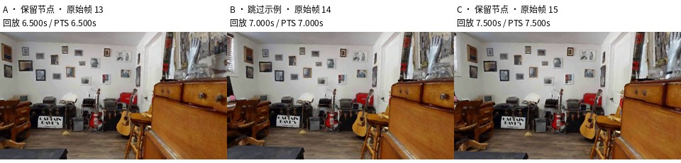
最接近中段的实际合并（边 8→9）：真实原始帧 [13, 14, 15]；区间共跳过 1 个观测，图示其中 1 帧，均退出独立样本和历史。首个原始短步 0.000 m / 4.07°；合并 GT 局部动作 [前 0.117 m，左 0.008 m，CCW 4.07°]，记录间隔 1.000 s。原始数据保留。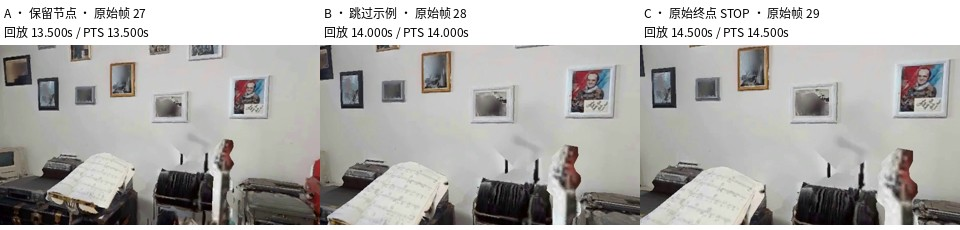
末端：真实原始帧 [27, 28, 29]；区间共跳过 1 个观测，图示其中 1 帧，均退出独立样本和历史。首个原始短步 0.235 m / -0.00°；合并 GT 局部动作 [前 0.325 m，左 0.000 m，CCW -0.00°]，记录间隔 1.000 s。原始数据保留。RVQ 较低重建误差 · 质量分 7.10
scene_id: hm3d/train/00074-kHvNo8x6Qoe/kHvNo8x6Qoe.basis.glb
episode_id: hm3d__kHvNo8x6Qoe__semantic_f2c2d7a5
source_name: original
source_prefix: oss://ss-oss1/data/user/yuanxu/vln_data/hm3d-r23-k3-bin1-20261105/
child_run: hm3d_r23_k3_bin1_20261105_scene_c54e46f2bd9e
shard_id: kHvNo8x6Qoe__00012
路程 4.00 m · 记录时长 15.50 s · 原始 32 帧。硬错误：无；suspicious：无。
| 分支 | 同节点数 | 整轨迹 ADE（m） | FDE（m） |
|---|
| K32 | 22 | 0.247 | 0.4567 |
| K64 | 22 | 0.1457 | 0.2252 |
| RVQ | 22 | 0.02066 | 0.03127 |
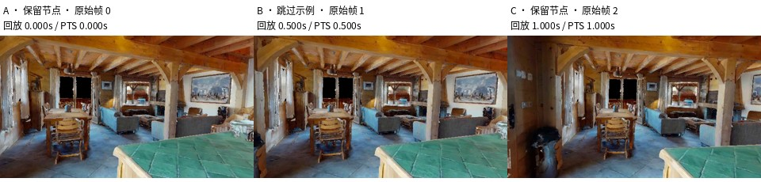
起步：真实原始帧 [0, 1, 2]；区间共跳过 1 个观测，图示其中 1 帧，均退出独立样本和历史。首个原始短步 0.000 m / 3.19°；合并 GT 局部动作 [前 0.000 m，左 0.000 m，CCW 15.40°]，记录间隔 1.000 s。原始数据保留。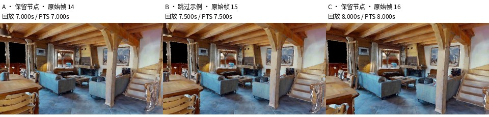
最接近中段的实际合并（边 10→11）：真实原始帧 [14, 15, 16]；区间共跳过 1 个观测，图示其中 1 帧，均退出独立样本和历史。首个原始短步 0.086 m / 0.00°；合并 GT 局部动作 [前 0.362 m，左 -0.000 m，CCW -0.00°]，记录间隔 1.000 s。原始数据保留。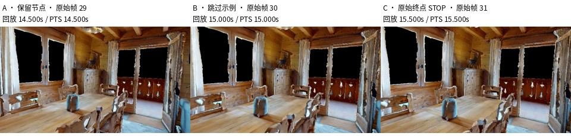
末端：真实原始帧 [29, 30, 31]；区间共跳过 1 个观测，图示其中 1 帧，均退出独立样本和历史。首个原始短步 0.144 m / 0.00°；合并 GT 局部动作 [前 0.216 m，左 -0.000 m，CCW 0.00°]，记录间隔 1.000 s。原始数据保留。三分支误差较接近 · 质量分 9.99
scene_id: hm3d/train/00135-HeSYRw7eMtG/HeSYRw7eMtG.basis.glb
episode_id: hm3d__HeSYRw7eMtG__semantic_b72d2180
source_name: supplement
source_prefix: oss://ss-oss1/data/user/yuanxu/vln_data/hm3d-r23-k3-bin1-20261105/supplement-20261111/
child_run: hm3d_r23_k3_bin1_supplement_20261111_scene_2557a21fc365
shard_id: HeSYRw7eMtG__00000
路程 4.53 m · 记录时长 11.50 s · 原始 24 帧。硬错误：无；suspicious：无。
| 分支 | 同节点数 | 整轨迹 ADE（m） | FDE（m） |
|---|
| K32 | 17 | 0.09327 | 0.2417 |
| K64 | 17 | 0.06853 | 0.08158 |
| RVQ | 17 | 0.03731 | 0.04841 |
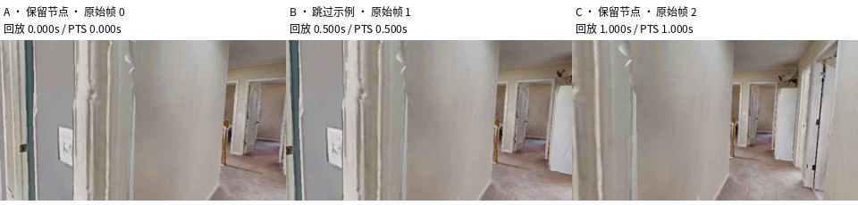
起步：真实原始帧 [0, 1, 2]；区间共跳过 1 个观测，图示其中 1 帧，均退出独立样本和历史。首个原始短步 0.000 m / -4.40°；合并 GT 局部动作 [前 0.000 m，左 0.000 m，CCW -21.23°]，记录间隔 1.000 s。原始数据保留。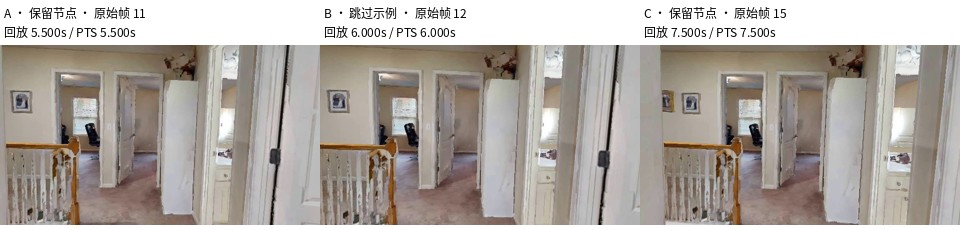
最接近中段的实际合并（边 8→9）：真实原始帧 [11, 12, 15]；区间共跳过 3 个观测，图示其中 1 帧，均退出独立样本和历史。首个原始短步 0.067 m / 0.00°；合并 GT 局部动作 [前 0.121 m，左 0.007 m，CCW 7.33°]，记录间隔 2.000 s。原始数据保留。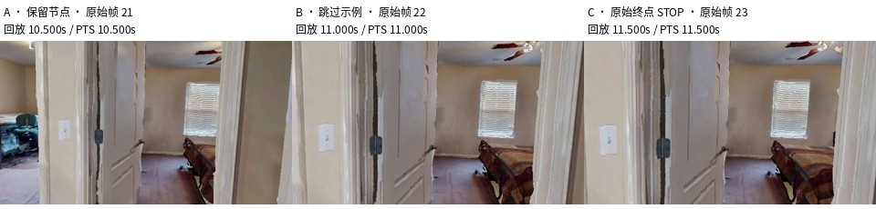
末端：真实原始帧 [21, 22, 23]；区间共跳过 1 个观测，图示其中 1 帧，均退出独立样本和历史。首个原始短步 0.255 m / 0.00°；合并 GT 局部动作 [前 0.310 m，左 -0.000 m，CCW 0.00°]，记录间隔 1.000 s。原始数据保留。较困难重建样例 · 质量分 7.18
scene_id: hm3d/train/00744-1S7LAXRdDqK/1S7LAXRdDqK.basis.glb
episode_id: hm3d__1S7LAXRdDqK__semantic_535d4182
source_name: supplement
source_prefix: oss://ss-oss1/data/user/yuanxu/vln_data/hm3d-r23-k3-bin1-20261105/supplement-20261111/
child_run: hm3d_r23_k3_bin1_supplement_20261111_scene_8569d9506048
shard_id: 1S7LAXRdDqK__00001
路程 10.77 m · 记录时长 39.00 s · 原始 79 帧。硬错误：无；suspicious：无。
| 分支 | 同节点数 | 整轨迹 ADE（m） | FDE（m） |
|---|
| K32 | 51 | 0.9715 | 2.518 |
| K64 | 51 | 0.4842 | 1.195 |
| RVQ | 51 | 0.143 | 0.3212 |
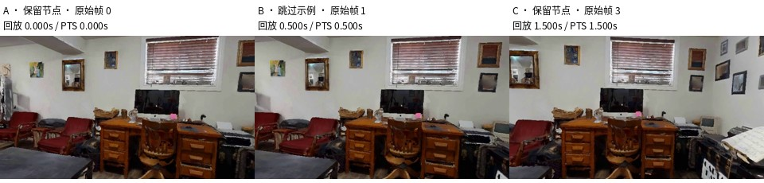
起步：真实原始帧 [0, 1, 3]；区间共跳过 2 个观测，图示其中 1 帧，均退出独立样本和历史。首个原始短步 0.000 m / -3.67°；合并 GT 局部动作 [前 0.000 m，左 -0.000 m，CCW -17.47°]，记录间隔 1.500 s。原始数据保留。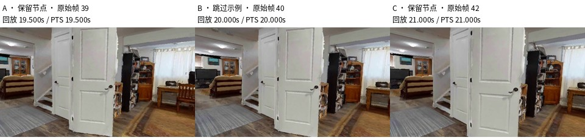
最接近中段的实际合并（边 26→27）：真实原始帧 [39, 40, 42]；区间共跳过 2 个观测，图示其中 1 帧，均退出独立样本和历史。首个原始短步 0.000 m / 5.37°；合并 GT 局部动作 [前 0.271 m，左 0.025 m，CCW 5.37°]，记录间隔 1.500 s。原始数据保留。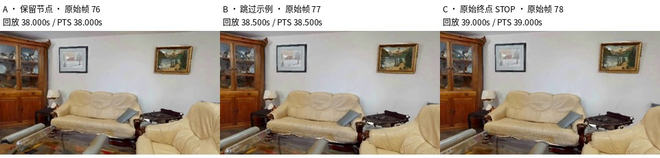
末端：真实原始帧 [76, 77, 78]；区间共跳过 1 个观测，图示其中 1 帧，均退出独立样本和历史。首个原始短步 0.162 m / 0.00°；合并 GT 局部动作 [前 0.255 m，左 0.000 m，CCW 0.00°]，记录间隔 1.000 s。原始数据保留。